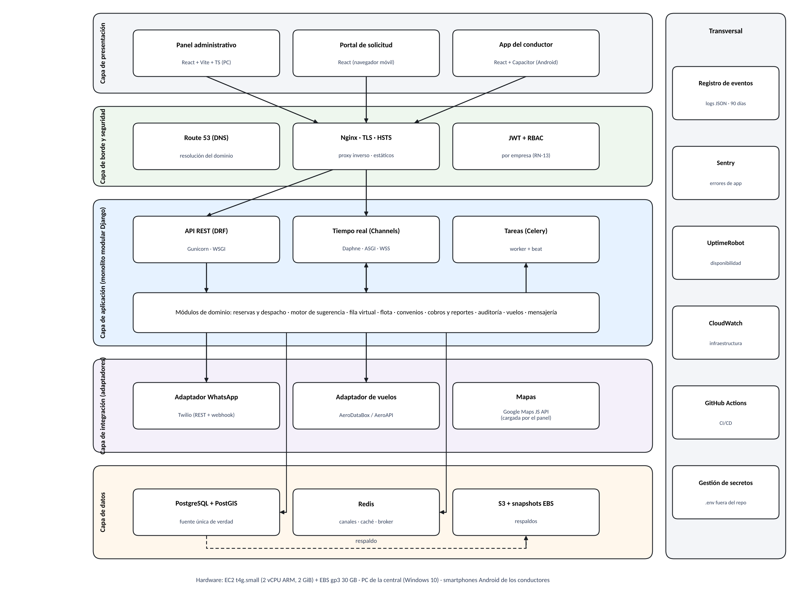
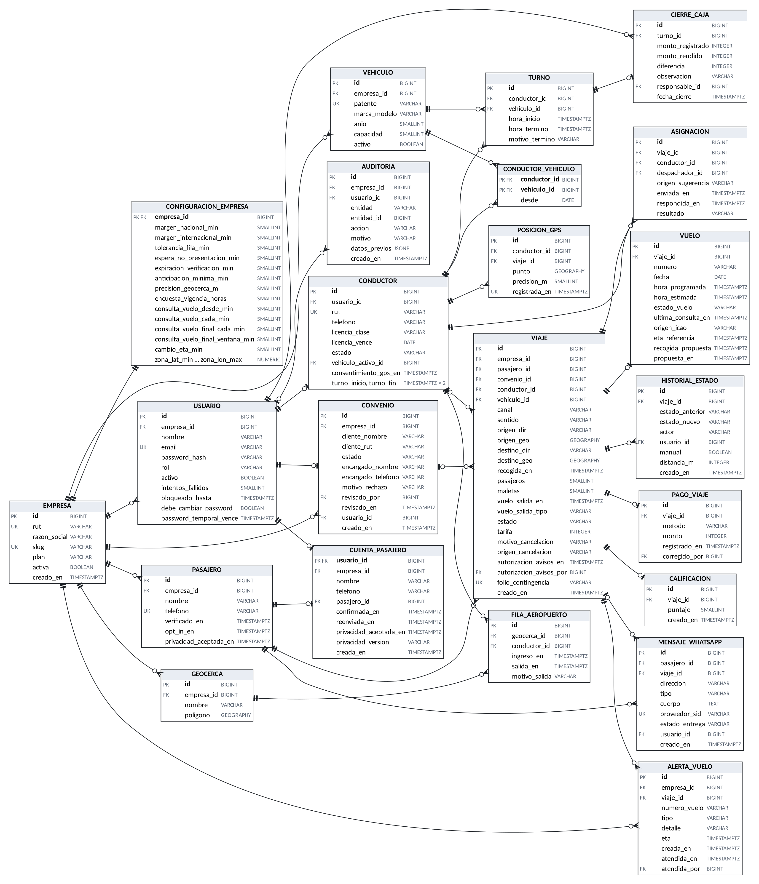
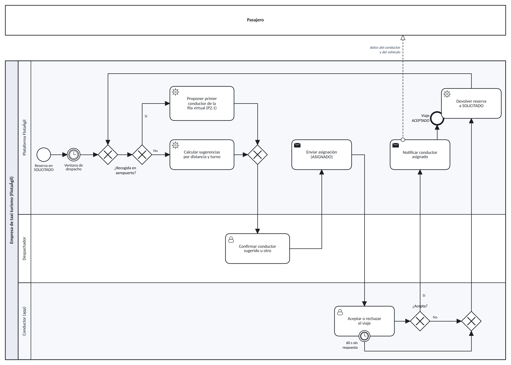
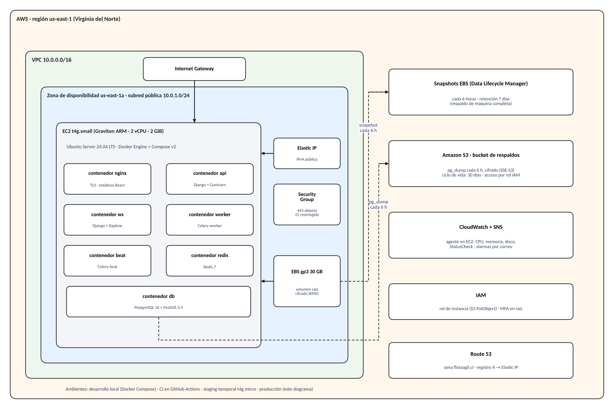

PROYECTO DE TÍTULO · TIHI84 · INACAP LA GRANJA
Guía del proyecto FlotaÁgil
Qué construimos, con qué, por qué así y cómo explicarlo. Una guía para entender el sistema de punta a punta y defenderlo en la presentación.
Renato González · Carlos Ortiz
Estado al corte de la semana 14 (noviembre de 2026)
Documento de estudio interno del equipo
0Cómo usar esta guía
La guía está pensada para leerse en orden, de lo general a lo particular. Cada capítulo responde tres preguntas: qué es, por qué lo elegimos y qué decir si nos preguntan. Para que se fije, usa tres tipos de recuadro:
Analogía
Una comparación con algo cotidiano para entender la idea antes de ver los detalles técnicos.
Cómo defenderlo
La respuesta corta, en una o dos frases, que conviene dar si el profesor o la comisión pregunta por ese tema.
Ojo
Un error común, una confusión frecuente o algo que todavía no está demostrado y que no hay que prometer.
Al final hay un glosario y preguntas de repaso con respuesta. Un buen método de estudio es leer un capítulo, cerrar la guía e intentar explicarlo en voz alta en un minuto; luego, comprobar con las preguntas.
Contenido
1. El proyecto en una página
2. El problema y la propuesta de valor
3. Mapa general de la arquitectura
4. Las tecnologías, una por una, y por qué
5. La estructura del repositorio y por qué es así
6. El backend por dentro: las apps de Django
7. Los clientes: panel, portal y app del conductor
8. El modelo de datos explicado
9. Un viaje de punta a punta
10. Tiempo real: WebSocket, Redis y la geocerca
11. Tareas en segundo plano: Celery
12. Seguridad y privacidad
13. Infraestructura, respaldos y continuidad
14. Calidad: pruebas e integración continua
15. Forma de trabajo: Scrum y Git
16. Glosario
17. Preguntas de repaso con respuesta
18. Guion de un minuto para la presentación
1El proyecto en una página
FlotaÁgil es un SaaS (software que se arrienda como servicio en la nube) para empresas de taxi turismo: las de patente naranja que hacen traslados al aeropuerto, hoteles y empresas con convenio. Nuestro cliente es una PYME con 30 a 50 autos y unas 1.500 reservas al mes, que trabajaba con WhatsApp, Excel y un cuaderno.
Tres clientes, un backend
Panel web administrador y despachador: mapa de la flota, reservas, despacho, reportes.
Portal web pasajero y empresa con convenio: pedir, seguir y cancelar viajes con su cuenta.
App Android conductor: turno, aceptar viajes, navegar, cobrar, enviar su ubicación.
Los números que hay que saber
12,1 % de reservas perdidas · 8 min 40 s por asignación · 35 % de tiempo muerto · $34.500 diarios de descuadre de caja.
Metas: pérdida ≤ 5 %, asignación < 3 min, tiempo muerto ≤ 28 %, cuadratura ≥ 98 %.
Al corte: 25 + 2 + 12 historias construidas, 2.075 pruebas automáticas.
Analogía
Piensa en una
torre de control de aeropuerto. Hoy el despachador es un controlador sin radar: pregunta por radio dónde está cada avión. FlotaÁgil le da el radar (mapa en vivo), el plan de vuelos (reservas y vuelos monitoreados), sugerencias de qué pista usar (asignación asistida) y un registro de todo lo que pasó (auditoría y reportes). La decisión sigue siendo del controlador.
Cómo defenderlo
«FlotaÁgil no solo digitaliza la central: anticipa los atrasos de vuelos, recomienda al mejor conductor, alerta cuando algo se desvía y mide el negocio. La decisión final sigue siendo humana.»
2El problema y la propuesta de valor
Las causas, no los síntomas
Con un diagrama de Ishikawa llegamos a tres causas raíz tecnológicas y una de decisión. Conviene recordarlas porque cada parte del sistema responde a una:
| Causa raíz | Qué la resuelve |
|---|
| No hay una fuente única de datos (WhatsApp, Excel y cuaderno por separado) | Una base de datos PostgreSQL y una API que usan todos los clientes |
| No se sabe dónde está la flota | GPS de la app + WebSocket + mapa en vivo |
| El cobro no se registra cuando ocurre | Pago obligatorio al finalizar cada viaje (RN-10) y cierre de caja por turno |
| Se asigna por memoria, sin datos | Motor de sugerencia, monitoreo de vuelos, alertas e indicadores |
Las cinco capacidades diferenciadoras
El profesor pidió demostrar que el proyecto es más que «pasar el cuaderno al computador». Esta es la respuesta:
- Seguimos tu vuelo por ti. Si el vuelo se atrasa, el sistema lo detecta y propone la nueva hora de recogida (hora estimada + 20 min nacional o 35 min internacional). El pasajero no tiene que avisar.
- Asignación inteligente asistida. Filtra a los conductores disponibles, sin otro viaje y con capacidad suficiente, y los ordena por el turno de la fila del aeropuerto o por distancia real (PostGIS).
- Alertas de desviación. Conductor que no responde en 60 s, llegada automática por geocerca, pasajero que no se presenta, conductor que sale de la fila.
- Tablero de indicadores. Nueve KPI con semáforo y cierre de caja por turno.
- Predicción de demanda (evolución, no está en el MVP): estimar viajes por hora con el historial y los vuelos programados.
Ojo
La predicción de demanda
no está construida: se presenta como evolución porque necesita al menos tres meses de datos reales. No la muestres como algo hecho.
3Mapa general de la arquitectura

Arquitectura por capas de FlotaÁgil (la misma figura del Informe 2).
Lee la figura de arriba hacia abajo:
- Clientes: el navegador (panel y portal) y la app Android. Solo muestran y capturan datos; no guardan la «verdad».
- Nginx: la puerta de entrada. Cifra la conexión (HTTPS) y reparte: lo que es API va a Gunicorn, lo que es tiempo real va a Daphne.
- Django: el cerebro. Aplica las reglas de negocio (RN-01 a RN-20) y expone la API REST y los canales WebSocket.
- Celery: el ayudante que trabaja en segundo plano (WhatsApp, vuelos, expiraciones).
- PostgreSQL + PostGIS: la memoria permanente. Redis: la memoria rápida y el «altavoz» entre procesos.
- Servicios externos: Twilio (WhatsApp), API de vuelos, mapas. Cada uno detrás de un adaptador.
Analogía: un restaurante
Los clientes (panel, portal, app) son los
meseros: toman pedidos y los llevan a la mesa. Nginx es el
recepcionista que dirige a cada uno a su lugar. Django es la
cocina, donde están las recetas (reglas de negocio). PostgreSQL es la
despensa con el inventario oficial. Redis es la
pizarra de la cocina donde se anotan los pedidos urgentes. Celery es el
ayudante que hace los encargos que no pueden hacer esperar al cliente, como ir a comprar.
Cómo defenderlo
«Es un monolito modular con API-first: un solo backend, ordenado por dominios, al que se conectan tres clientes. Lo preferimos a microservicios porque somos dos personas y una sola instancia; los módulos están separados para poder dividirlos si el producto crece.»
4Las tecnologías, una por una, y por qué
Cada tecnología se eligió con una matriz ponderada (criterios con peso, notas de 1 a 5). No hay que memorizar los puntajes, pero sí la razón principal.
| Tecnología | Qué hace en el proyecto | Por qué esta y no otra |
|---|
| Python 3.12 + Django 5.2 LTS | Backend: modelos, reglas, API, panel de administración interno | Trae resuelto lo que más cuesta: usuarios y permisos, ORM, migraciones, admin. GeoDjango para mapas y Channels para tiempo real. LTS = soporte largo. FastAPI exigía armar todo eso a mano. |
| Django REST Framework | Construir la API REST (JSON) | Serializadores que validan datos y permisos por vista; estándar de facto con Django. |
| Django Channels + Daphne | WebSocket: mapa en vivo y avisos a la app | El mismo proyecto Django atiende HTTP y WebSocket; Daphne es el servidor que entiende WebSocket (ASGI). |
| Celery 5.5 | Tareas en segundo plano y programadas | Enviar un WhatsApp o consultar un vuelo puede tardar o fallar; no puede bloquear al usuario. Reintenta solo. |
| PostgreSQL 16 + PostGIS 3.4 | Base de datos relacional con funciones geográficas | Transacciones confiables (un pago y un viaje no pueden quedar a medias) y consultas «¿quién está a menos de X metros?» con índices espaciales. MongoDB no asegura esa integridad. |
| Redis 7.2 | Canal entre procesos, caché de la última posición, cola de Celery | Memoria muy rápida: guardar cada posición GPS en la base sería escribir cientos de veces por minuto. |
| React 19 + Vite 6 + TypeScript | Panel y portal web | Un solo lenguaje y componentes reutilizables entre panel, portal y app. TypeScript detecta errores antes de ejecutar. |
| Capacitor 7 | Empaquetar la app React como app Android | Reutiliza el código web y da acceso al GPS en segundo plano. Una PWA deja de enviar la ubicación al minimizarse. |
| Twilio WhatsApp API | Verificación, avisos, cancelación, calificación y chat | Cuesta menos de un tercio que el SMS y es el canal que el pasajero ya usa. Está detrás de un adaptador para cambiar a la API directa de Meta. |
| FlightAware AeroAPI | Estado y hora estimada de los vuelos | Crédito gratuito para desarrollar; adaptador para cambiar a AeroDataBox (más barato) en producción. |
| Docker + Docker Compose | Empaquetar cada servicio en un contenedor | «Funciona en mi máquina» deja de ser un problema: lo mismo corre en desarrollo, staging y producción. |
| AWS (EC2 t4g.small, EBS, S3, Route 53, CloudWatch) | Infraestructura en la nube | Menor costo para la configuración mínima, snapshots y monitoreo integrados y experiencia del equipo. Un solo proveedor (no AWS «o» GCP). |
| GitHub + GitHub Actions | Repositorio, tablero Scrum e integración continua | Todo en un lugar: código, issues, tablero y pruebas automáticas en cada pull request. |
Analogía: ARM y t4g
La instancia t4g usa procesadores ARM (Graviton), los mismos que los celulares: gastan menos y cuestan menos. Por eso todas las imágenes Docker deben existir en versión ARM64, igual que una app debe estar compilada para el teléfono donde se instala.
Cómo defenderlo
«Elegimos tecnologías maduras, con buena documentación y que al menos uno del equipo conocía. Donde había riesgo (GPS en segundo plano) hicimos primero una prueba de concepto, y donde hay proveedores externos pusimos adaptadores para no quedar amarrados.»
5La estructura del repositorio y por qué es así
Usamos un monorepo: un solo repositorio con todas las partes. Así un cambio que toca backend y web va en un mismo pull request y la integración continua prueba todo junto.
flotaagil/
├── backend/ # Django: API REST, WebSocket, Celery (responsable: Carlos)
│ ├── config/ # settings, urls, asgi (WebSocket), wsgi (HTTP), celery
│ ├── apps/ # un módulo por dominio del negocio
│ │ ├── cuentas/ # usuarios, roles, inicio de sesión, JWT
│ │ ├── flota/ # conductores, vehículos, turnos, GPS, tiempo real
│ │ ├── reservas/ # viajes, estados, asignación, pagos, avisos, reportes
│ │ ├── aeropuerto/# vuelos, monitoreo, alertas, fila virtual, geocerca
│ │ ├── convenios/ # empresas cliente y su cuenta
│ │ ├── portal/ # lo que usa el portal del pasajero
│ │ ├── integraciones/ # adaptadores: WhatsApp, vuelos, correo, mapas
│ │ ├── auditoria/ # registro inmutable de acciones sensibles
│ │ └── comun/ # permisos, validadores y piezas compartidas
│ ├── conftest.py # configuración común de las pruebas (pytest)
│ └── openapi.yaml # contrato de la API
├── web/ # React + Vite: panel y portal (responsable: Renato)
│ └── src/ api/ sesion/ rutas/ mapa/ reservas/ viajes/ flota/ caja/
│ convenios/ portal/ pedido/ diseno/ componentes/ pruebas/ …
├── app/ # React + Capacitor: app del conductor (responsable: Renato)
│ └── src/ conductor/ gps/ pantallas/ sesion/ pruebas/
├── infra/ # docker-compose, nginx, runbook, inventario (Carlos)
├── docs/ # backlog, diccionarios, evidencias por HU, diseño, PR
└── .github/ # workflow de CI, plantillas de issues, Dependabot
Por qué está ordenado así
- Por responsabilidad y por persona. Cada carpeta raíz tiene un dueño (backend y infra, Carlos; web y app, Renato), lo que reduce los conflictos al trabajar en paralelo.
- El backend por dominios, no por tipo de archivo. En vez de una carpeta «modelos» y otra «vistas» gigantes, cada app de Django agrupa todo lo de un tema (modelo, servicios, vistas, pruebas). Si mañana hay que separar «aeropuerto» como servicio aparte, ya está aislado. Esto se llama monolito modular.
- Las integraciones aisladas. Todo lo que habla con un tercero está en
integraciones/ detrás de un adaptador; el resto del código no sabe si el WhatsApp sale por Twilio o por Meta.
- La documentación vive con el código. Las evidencias de cada historia (
docs/evidencias/HU-xx) y el diccionario de cambios hacen que el avance sea verificable por cualquiera.
- Lo que no se versiona: el
.env con secretos, node_modules, builds. Solo se sube .env.example con valores de ejemplo.
Analogía
Un monorepo es una casa con piezas separadas: cada uno tiene su pieza (backend, web, app), pero comparten la misma dirección, la misma llave y el mismo reglamento (CI, ramas protegidas). Un multirepo serían tres casas distintas: más independencia, pero más difícil coordinar una mudanza.
6El backend por dentro
Las piezas de una app de Django
| Archivo | Para qué sirve | Analogía |
|---|
models.py | Define las tablas (VIAJE, CONDUCTOR…) como clases de Python | Los planos de los muebles de la despensa |
migrations/ | Historial numerado de cambios al esquema de la base | El registro de remodelaciones de la casa |
serializers.py | Convierte objetos a JSON y valida lo que llega | El traductor que además revisa que el pedido esté completo |
views.py | Recibe la petición HTTP, revisa permisos y responde | El mesero que atiende la mesa |
servicios.py, asignacion.py, estados.py | Las reglas de negocio puras (por ejemplo, qué transiciones de estado se permiten) | Las recetas de la cocina |
tareas.py | Tareas de Celery (expirar reservas, consultar vuelos) | Los encargos del ayudante |
consumers.py, routing.py | Canales WebSocket | La radio de la central |
tests/ | Pruebas automáticas de esa app | El control de calidad |
Reglas que viven en el backend
Las reglas nunca se confían solo al frontend: un usuario podría saltarse la pantalla y llamar a la API directamente. Las más importantes:
- RN-02 Ninguna asignación ni ajuste de recogida sin confirmación del despachador.
- RN-03 Un conductor tiene a lo más un viaje en ejecución (se protege con un bloqueo de fila en la base, ver CP-14).
- RN-04 Si el conductor no responde en 60 s, la reserva vuelve a SOLICITADO.
- RN-10 Ningún viaje se finaliza sin método de pago y monto.
- RN-13 Cada usuario solo ve los registros de su empresa (multiempresa).
- RN-18 La ubicación del conductor solo se registra en turno y con consentimiento.
Ojo: la concurrencia
Si dos despachadores asignan al mismo conductor en el mismo instante, sin protección ambos podrían «ganar». Por eso la asignación toma un bloqueo
SELECT … FOR UPDATE sobre la reserva y el conductor dentro de una transacción: el segundo espera, ve que ya está ocupado y recibe un error 409. CP-14 lo prueba con dos peticiones simultáneas reales.
7Los clientes: panel, portal y app
Panel (web)
Administrador y despachador. Mapa en vivo, reservas, sugerencia de conductor, alertas de vuelo, chat de WhatsApp, reportes, cierre de caja, auditoría y usuarios.
Portal (web)
Pasajero con cuenta y empresa con convenio. Pedir en tres tipos de viaje (desde el aeropuerto, al aeropuerto, en la ciudad), revisar el pedido, ver «tu viaje» y «mis viajes», cancelar sin conductor asignado.
App del conductor
Iniciar y terminar turno con el vehículo, aceptar o rechazar en 60 s, abrir Google Maps o Waze, marcar estados, registrar el cobro, ver «Mi turno». Envía el GPS cada 30 s solo en turno.
Lo que comparten
React y TypeScript, la misma API, el mismo inicio de sesión (CC-16) y un sistema visual por tokens («Tiffany degradé») que cada empresa personaliza con su logo y color.
¿Por qué el pasajero no tiene app?
Porque pedir un taxi turismo es algo ocasional: nadie quiere instalar una app para un traslado al aeropuerto. El portal web funciona en cualquier teléfono y WhatsApp hace el resto (avisos, cancelación, calificación). Desde CC-18 el pasajero pide siempre con cuenta: se verifica su teléfono una vez y no hay reservas de invitados, por seguridad.
Analogía: tokens de diseño
Los tokens de color son como las
variables de una planilla: si cambias el valor de una celda, todo lo que depende de ella se actualiza. Cambiar el color primario de una empresa recolorea todo el portal sin tocar un componente.
8El modelo de datos explicado

Modelo lógico (23 entidades). Los detalles están en el diccionario de datos del Informe 2.
No hay que saberse las 23 tablas. Basta con entender cinco grupos:
| Grupo | Tablas | Idea clave |
|---|
| Inquilino | EMPRESA, CONFIGURACION_EMPRESA | Todo cuelga de una empresa (RN-13). Los márgenes y tiempos son parámetros por empresa, no números fijos en el código. |
| Personas | USUARIO, CONDUCTOR, PASAJERO, CUENTA_PASAJERO, CONVENIO | Un USUARIO con rol; el conductor y el pasajero con cuenta se ligan a él. |
| El viaje | VIAJE, HISTORIAL_ESTADO, ASIGNACION, PAGO_VIAJE, CALIFICACION, MENSAJE_WHATSAPP | VIAJE es el centro. Cada cambio de estado queda en HISTORIAL_ESTADO: de ahí salen los KPI. |
| Flota y turnos | VEHICULO, CONDUCTOR_VEHICULO, TURNO, CIERRE_CAJA, POSICION_GPS | TURNO y CIERRE_CAJA nacieron de la EF2: sin ellos no se podía medir la cuadratura. |
| Aeropuerto | VUELO, ALERTA_VUELO, GEOCERCA, FILA_AEROPUERTO | La geocerca es un polígono; la fila es el orden de llegada a ese polígono. |
Los estados del viaje
PENDIENTE_CONFIRMACION → SOLICITADO → ASIGNADO → ACEPTADO → EN_CAMINO → EN_ZONA → PASAJERO_A_BORDO → FINALIZADO, más CANCELADO. Si el conductor rechaza o no responde, ASIGNADO vuelve a SOLICITADO.
Analogía: máquina de estados
Es como el seguimiento de un paquete: «recibido, en bodega, en reparto, entregado». Un paquete no puede pasar de «recibido» a «entregado» sin pasar por reparto, y el sistema rechaza cualquier salto no permitido.
Ojo
HISTORIAL_ESTADO y AUDITORIA son
solo inserción: un trigger de la base rechaza modificarlas o borrarlas. Es lo que da confianza a los reportes y a la auditoría.
9Un viaje de punta a punta
Si entiendes este recorrido, entiendes el sistema. Ejemplo: una pasajera que llega a Santiago en un vuelo internacional.
- Pide en el portal con su cuenta: «Desde el aeropuerto», número de vuelo, 2 pasajeros y 3 maletas. El backend valida el vuelo contra la API de vuelos y crea el VIAJE en SOLICITADO.
- Celery programa el monitoreo del vuelo: consultas desde 3 h antes, cada 30 min, y cada 10 min en la última hora.
- El vuelo se atrasa 50 min. El monitoreo detecta el cambio, calcula la nueva recogida (hora estimada + 35 min) y deja una propuesta. El panel la muestra como alerta; el despachador la confirma (RN-02).
- Asignación. El despachador abre la reserva y ve la sugerencia: el primero de la fila virtual del aeropuerto con un auto de capacidad suficiente. Confirma con un clic.
- Aviso al conductor. El backend guarda la ASIGNACION y publica un evento en Redis; Channels lo entrega por WebSocket a la app. Tiene 60 s para aceptar.
- En camino y en zona. La app envía su posición; al entrar a 150 m del punto de recogida el sistema marca EN_ZONA solo, y Celery envía el WhatsApp «tu vehículo te espera».
- A bordo y finalizado. El conductor marca a bordo y, al llegar, registra método y monto. Sin eso no puede finalizar (RN-10).
- Después. La pasajera recibe la encuesta por WhatsApp; el pago entra al turno del conductor y, al cerrar el turno, el administrador cuadra la caja (CIERRE_CAJA).

Proceso P2, despacho y asignación (BPMN 2.0).
10Tiempo real: WebSocket, Redis y la geocerca
REST frente a WebSocket
REST es pregunta y respuesta: el cliente pide, el servidor contesta y la conexión se cierra. Sirve para crear una reserva o consultar un reporte. WebSocket es una conexión que queda abierta en ambos sentidos: el servidor puede avisar sin que nadie pregunte. Sirve para mover los autos en el mapa y avisar una asignación.
Analogía
REST es
mandar un correo y esperar respuesta. WebSocket es
una llamada telefónica que queda abierta: cualquiera de los dos habla cuando tiene algo que decir.
El camino de una posición GPS
- La app envía la posición cada 30 s (solo en turno), con su precisión.
- El backend descarta lecturas imprecisas (más de 50 m para la geocerca), guarda la última en Redis y la persiste en POSICION_GPS.
- Publica el cambio en un grupo de Channels; todos los paneles de esa empresa lo reciben y mueven el auto en el mapa.
- PostGIS revisa si la posición cae dentro de una geocerca (zona del aeropuerto o radio de 150 m del origen) para la fila o para EN_ZONA.
Cómo defenderlo
«Usamos Redis para no escribir en la base cientos de veces por minuto: la última posición vive en memoria y en la base queda el historial, que se borra a los 30 días.»
11Tareas en segundo plano: Celery
Hay trabajo que no puede hacer esperar al usuario o que debe ocurrir solo, a cierta hora. Para eso está Celery: un worker que ejecuta tareas en cola y un beat que las programa como un despertador.
| Tarea | Por qué en segundo plano |
|---|
| Enviar WhatsApp (verificación, avisos, encuesta) | Twilio puede tardar o fallar; se reintenta con espera exponencial |
| Consultar vuelos | Programada según la hora del vuelo; compartida entre reservas del mismo vuelo |
| Expirar solicitudes y asignaciones sin respuesta | Debe ocurrir aunque nadie esté mirando |
| Purgar datos (GPS a 30 días, mensajes a 12 meses) | Cumplir la retención (RN-15) de forma automática |
Ojo: idempotencia
Twilio puede enviar dos veces el mismo aviso de entrega (webhook). El sistema guarda el identificador del mensaje y, si llega repetido, no lo procesa de nuevo. Eso es
idempotencia: hacer algo dos veces tiene el mismo efecto que hacerlo una.
12Seguridad y privacidad
Autenticación con JWT
Al iniciar sesión el usuario recibe dos tokens: uno de acceso (15 min) que acompaña cada petición, y uno de renovación (12 h) que sirve para pedir otro de acceso. En el panel el de renovación va en una cookie httpOnly (JavaScript no la puede leer, así un script malicioso no la roba); en la app, en el almacén cifrado de Android.
Analogía
El token de acceso es la
pulsera de un evento: te deja entrar a todas partes, pero dura poco. El de renovación es tu
entrada original, guardada en un lugar seguro, con la que pides una pulsera nueva.
Otras capas
- Contraseñas con PBKDF2-SHA256 y sal; bloqueo tras 5 intentos.
- Permisos por rol y por empresa en cada vista (RN-13).
- HTTPS con TLS 1.2+ y HSTS; disco y respaldos cifrados; secretos en SSM, nunca en Git.
- Bandit (Python), ESLint, auditoría de dependencias y OWASP ZAP.
Privacidad del GPS de los conductores
Es el tema que el profesor pidió profundizar. Las seis ideas: finalidad (solo despacho, seguridad, fila e indicadores), proporcionalidad (solo en turno), consentimiento (aviso aceptado y registrado), Reglamento Interno (DT Ord. 148 si es dependiente), acceso restringido (admin y despachador de su empresa) y retención de 30 días con borrado automático.
Cómo defenderlo
«El GPS es una herramienta de operación, no de vigilancia: se apaga al terminar el turno, el conductor sabe qué se registra y para qué, y los datos se borran a los 30 días. Cumple la Ley 21.719, que rige desde el 1 de diciembre de 2026, y el dictamen 148 de la Dirección del Trabajo.»
Ojo: Ley 21.553 (Ley Uber)
Regula a las empresas que
intermedian entre pasajeros y conductores independientes. FlotaÁgil es una herramienta interna de una empresa con flota propia, así que no es una EAT. Además, al corte de los informes su reglamento no se había publicado.
13Infraestructura, respaldos y continuidad

Infraestructura en AWS us-east-1.
Una instancia EC2 t4g.small (2 vCPU ARM, 2 GiB) corre todos los contenedores: Nginx, Gunicorn (API), Daphne (WebSocket), Celery, PostgreSQL con PostGIS y Redis. El disco es EBS gp3 cifrado y los respaldos van a S3.
Las dos siglas que siempre preguntan
RTO = 2 horas
Cuánto tiempo podemos estar caídos como máximo. Es el tiempo de recrear la instancia y restaurar el respaldo; mientras, la central opera en modo manual.
RPO = 6 horas
Cuántos datos podemos perder como máximo. Hay snapshot del disco cada 6 h y respaldo lógico (pg_dump) cada 6 h, alternados: si uno falla, el otro cumple.
Analogía
El RPO es
cada cuánto guardas la partida de un videojuego; el RTO,
cuánto tardas en volver a jugar después de que se cortó la luz.
Disponibilidad 99,0 %: en un mes de 720 h permite 7 h 12 min de caída no programada. No prometemos 99,5 % porque una sola instancia no lo sostiene. Retorno al servicio: lo anotado en papel durante una caída se ingresa después con el canal CONTINGENCIA y su folio, sin avisos al pasajero (HU-32).
14Calidad: pruebas e integración continua
| Tipo | Herramienta | Qué asegura |
|---|
| Unitarias | pytest, Vitest | Que cada regla funcione sola |
| Integración | pytest-django con PostgreSQL real | Que API, base y Redis funcionen juntos |
| Concurrencia | Hilos con barrera (CP-14) | Que dos asignaciones simultáneas no rompan RN-03 |
| Extremo a extremo | Playwright | Que los flujos funcionen en el navegador, también a 390 px |
| Carga | k6 en staging | p95 < 2 s con 50 usuarios y GPS < 5 s |
| Seguridad | Bandit, ZAP, Dependabot | Que no haya vulnerabilidades conocidas |
| Aceptación | UAT con el cliente | Que el sistema resuelva su problema |
Al corte hay 2.075 pruebas automáticas (1.221 de backend, 765 de web y 89 de la app). La cobertura mínima exigida por la DoD es 70 % en los módulos de negocio.
Integración continua
Cada pull request dispara el workflow ci en GitHub Actions: instala dependencias, corre linters, Bandit y todas las pruebas. La rama main está protegida: no se puede subir directo, solo por PR con el check en verde, y la fusión es squash (un commit por historia, historial lineal).
Ojo: pendientes reales
Todavía no está demostrado con WhatsApp real (plantillas aprobadas por Meta), con el GPS de un teléfono en la calle ni bajo carga en AWS. Las historias están construidas y «en revisión», a la espera de la fusión. Decirlo con claridad da más credibilidad que esconderlo.
15Forma de trabajo: Scrum y Git
| Rol | Quién | Qué hace |
|---|
| Product Owner | Juan Pérez | Prioriza, define criterios de aceptación, aprueba incrementos y cambios |
| Scrum Master | Carlos Ortiz | Facilita eventos y remueve impedimentos |
| Developers | Renato (web y app) · Carlos (backend e infra) | Construyen y prueban |
Por qué no hay matriz RACI: el profesor marcó un conflicto de interés (la misma persona era responsable y aprobaba). En Scrum la separación la dan los roles: quien construye no aprueba.
El ciclo de una historia
- La historia cumple la DoR (redactada, con criterios, estimada, sin bloqueos).
- Se crea una rama:
feat/HU-03-reservas, fix/…, docs/….
- Commits con Conventional Commits en español:
feat(backend): crear modelo VIAJE.
- Pull request con
Closes #12, CI en verde y lista de chequeo.
- Fusión squash a main; se cumple la DoD; la historia pasa a «Terminada».
- Al cerrar el sprint se etiqueta una versión SemVer (v0.1 … v1.0.0).
Analogía: DoR y DoD
La DoR es la
lista de ingredientes antes de cocinar (no se empieza sin todo); la DoD es el
control de calidad antes de servir (no sale de la cocina si no cumple).
Cambios de alcance: todo cambio entra como solicitud (CC-xx) con análisis de impacto y aprobación del PO. Los desvíos del diseño durante la construcción se registran como decisiones (DC-xx). Hay 18 CC y 47 DC.
16Glosario
| Término | Significado en simple |
|---|
| SaaS | Software que se usa por internet pagando un servicio, sin instalar servidores propios |
| API REST | Conjunto de direcciones (como /api/viajes/) por las que los clientes piden o envían datos en JSON |
| JSON | Formato de texto para intercambiar datos entre programas |
| WebSocket | Conexión que queda abierta para que el servidor avise en tiempo real |
| ORM | Traductor entre clases de Python y tablas SQL |
| Migración | Archivo que cambia el esquema de la base de forma controlada y reversible |
| PostGIS / geocerca | Extensión geográfica de PostgreSQL / polígono o radio que dispara una acción al entrar |
| JWT | Token firmado que prueba quién eres sin consultar la sesión en cada petición |
| Multiempresa (multi-tenant) | Varias empresas en el mismo sistema, cada una viendo solo lo suyo |
| Adaptador | Pieza que traduce un proveedor externo a una interfaz propia, para poder cambiarlo |
| Idempotencia | Repetir una operación no cambia el resultado |
| Contenedor (Docker) | Paquete con un programa y todo lo que necesita para correr igual en cualquier lugar |
| CI | Integración continua: pruebas automáticas en cada cambio |
| Squash | Unir todos los commits de una rama en uno al fusionar |
| SemVer | Versiones mayor.menor.parche (1.0.0) |
| p95 | El 95 % de las respuestas tarda menos que ese valor |
| RTO / RPO | Tiempo máximo caído / datos máximos perdidos |
| KPI / SLA | Indicador del negocio / compromiso de servicio con el cliente |
| DoR / DoD | Condiciones para empezar / para dar por terminada una historia |
| HU / SP | Historia de usuario / story points (tamaño relativo) |
| CC / DC | Solicitud de cambio de alcance / decisión de cambio durante la construcción |
| BPMN / UML | Notaciones estándar para procesos / para diseño de software |
17Preguntas de repaso
Intenta responder antes de leer la respuesta.
1. ¿Por qué FlotaÁgil es más que digitalizar la central?
Porque apoya decisiones con datos: anticipa atrasos de vuelos, recomienda conductores, alerta desviaciones y mide con KPI. Digitalizar solo registra.
2. ¿Por qué Django y no FastAPI?
Django trae usuarios, permisos, ORM, migraciones, admin, GeoDjango y Channels; con FastAPI habría que armar todo eso y somos dos.
3. ¿Para qué sirve Redis si ya tenemos PostgreSQL?
Como memoria rápida para la última posición, como canal entre procesos de Channels y como cola de Celery. No guarda nada que no esté también en PostgreSQL.
4. ¿Qué pasa si dos despachadores asignan al mismo conductor a la vez?
Un bloqueo de fila en una transacción hace que solo uno gane; el otro recibe 409. Lo prueba CP-14 con peticiones simultáneas.
5. ¿Por qué el pasajero no tiene app?
Pedir un taxi turismo es ocasional; un portal web y WhatsApp evitan instalar algo.
6. ¿Por qué Capacitor y no una PWA?
La PWA deja de enviar el GPS al minimizarse; Capacitor permite el GPS en segundo plano y reutiliza el código React.
7. ¿Cómo se protege la privacidad del conductor?
Solo en turno, con consentimiento, finalidad declarada, acceso por rol, Reglamento Interno y borrado a 30 días.
8. ¿Qué es el RPO y cómo se cumple?
La pérdida máxima de datos: 6 h. Se cumple con snapshots y pg_dump cada 6 h, alternados.
9. ¿Por qué 99,0 % y no 99,5 %?
Una sola instancia no sostiene 99,5 %; para más haría falta alta disponibilidad, fuera del alcance del MVP.
10. ¿Por qué un monorepo?
Un cambio que cruza backend y web va en un solo PR y la CI prueba todo junto; con dos personas es más simple.
11. ¿Qué es un adaptador y dónde lo usan?
Una capa que aísla a un proveedor: WhatsApp (Twilio o Meta), vuelos (AeroAPI o AeroDataBox), mapas y correo.
12. ¿Por qué se eliminó la matriz RACI?
Mostraba conflicto de interés (mismo responsable y aprobador). En Scrum los roles separan quién construye y quién aprueba.
13. ¿Para qué se agregaron TURNO y CIERRE_CAJA?
Sin ellos no se podía calcular la cuadratura ni los indicadores por turno (observación de la EF2).
14. ¿Qué no está demostrado todavía?
WhatsApp con plantillas aprobadas por Meta, GPS en teléfono real en la calle, carga en AWS y la fusión de los PR.
15. ¿FlotaÁgil está regulado por la Ley 21.553?
No: esa ley regula a las plataformas que intermedian con conductores independientes; FlotaÁgil es una herramienta interna de una empresa con flota. Su reglamento tampoco estaba publicado.
18Guion de un minuto para la presentación
Para decir de corrido
«Las empresas de taxi turismo pierden el 12 % de sus reservas, tardan casi 9 minutos en asignar un viaje y no cuadran la caja, porque trabajan con WhatsApp, Excel y un cuaderno. FlotaÁgil es un SaaS con un panel para la central, un portal para pasajeros y empresas con convenio, y una app para conductores.
Lo que lo diferencia es que no solo registra: sigue el vuelo del pasajero y ajusta la recogida si se atrasa, recomienda al mejor conductor según la fila del aeropuerto, la distancia y la capacidad, alerta cuando algo se desvía y mide el negocio con indicadores. Siempre decide una persona.
Lo construimos con Django y PostGIS, React y Capacitor, sobre AWS, con más de dos mil pruebas automáticas, cuidando la privacidad de los conductores: el GPS solo funciona en turno y se borra a los 30 días.»
Si preguntan algo que no sabes
Responde con lo que sí sabes y ofrece dónde está: «eso está en el capítulo de continuidad del Informe 2». Es mejor que inventar. Y si algo está pendiente, dilo: «está diseñado y lo probamos en la semana 15».